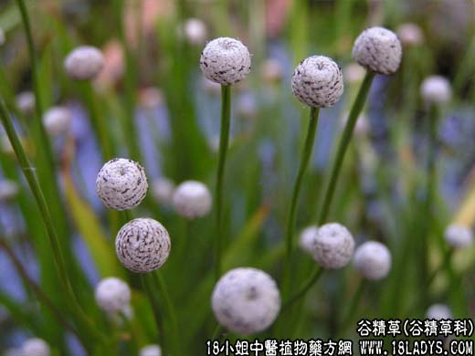

【中药概述】
谷精草为谷精草科草本谷精草带花茎的头状花序。甘、平。归肝、胃经。
1．疏散风热：用于风热上乘所致的目赤肿痛，兼有发热、微恶寒等风热表证者，配桑叶，菊花，金银花，牛蒡子等；用于肝火上炎所致的目赤肿痛，羞明多眵，可见角膜炎、巩膜炎等病，配
夏枯草，龙胆草，青葙子，钩藤，丹皮等药。
2．明目退翳：用于翳膜遮睛，等。可与荆芥 龙胆草 赤芍等配伍。本品轻浮上达，又善于散风热，故对风热目疾、翳膜遮睛等症有良效。如（<证治准绳>谷精龙胆散、谷精散）。
【药效鉴别】
谷精草与决明子功能相近，配用能增强清肝阳明作用。谷精草偏于疏散风热，且有良好的退翳之功。不论风热、肝火或肝血不足引起之翳膜遮睛均有效。
【药理作用】
水煎剂或水浸剂对大肠杆菌、绿脓杆菌、肺炎双球菌、常见皮肤真菌有不同的抑制作用。
【用量用法】
本品8——16g，水煎服，或入剂。